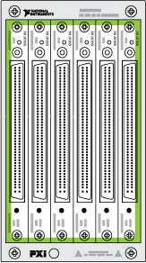
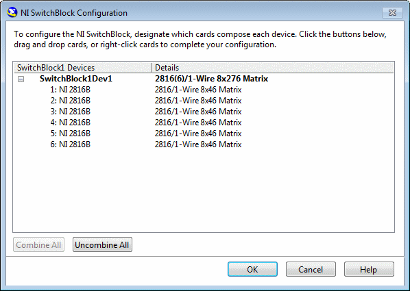
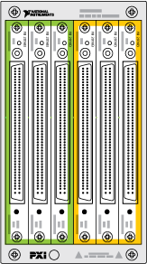
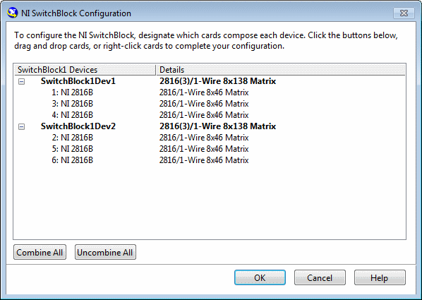
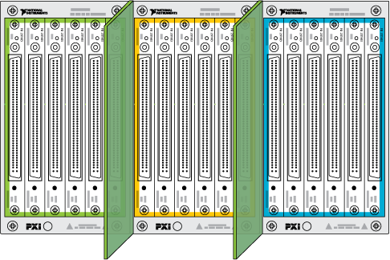

您可以将 NI SwitchBlock 系统配置为一个 NI SwitchBlock 设备或多个 NI SwitchBlock 设备。
一个 NI SwitchBlock 设备方法在 NI SwitchBlock 载体中的单个 NI SwitchBlock 中继卡内或在同一 NI SwitchBlock 载体中的多个 NI SwitchBlock 中继卡之间路由信号，这些中继卡已组合成单个 NI SwitchBlock 设备。
下图显示了一个 NI SwitchBlock 载体中的多个继电器卡，它们已组合成一个 NI SwitchBlock 设备。
|  |  |
多 NI SwitchBlock 设备方法在同一 NI SwitchBlock 载体内的多个 NI SwitchBlock 设备之间或与 NI 2806 扩展桥连接的多个 NI SwitchBlock 载体内的多个 NI SwitchBlock 设备之间路由信号。
下图显示了一个 NI SwitchBlock 载体中的多个继电器卡，它们组合成多个 NI SwitchBlock 设备。
|  |  |
下图显示了使用 NI 2806 扩展桥组合的多个 NI SwitchBlock 载体中的多个继电器卡。

前述的多个 NI SwitchBlock 设备配置在软件中是等效的。 |
Note Refer to Configuring the NI SwitchBlock in MAX for information on combining multiple NI SwitchBlock relay cards into a single NI SwitchBlock device and creating multiple NI SwitchBlock devices within a single NI SwitchBlock carrier. |
 Submit feedback on this topic.
Submit feedback on this topic. Visit ni.com/support for technical support.
Visit ni.com/support for technical support.